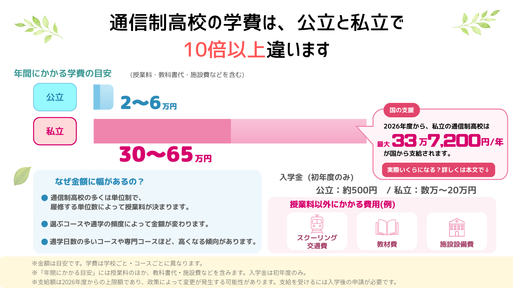
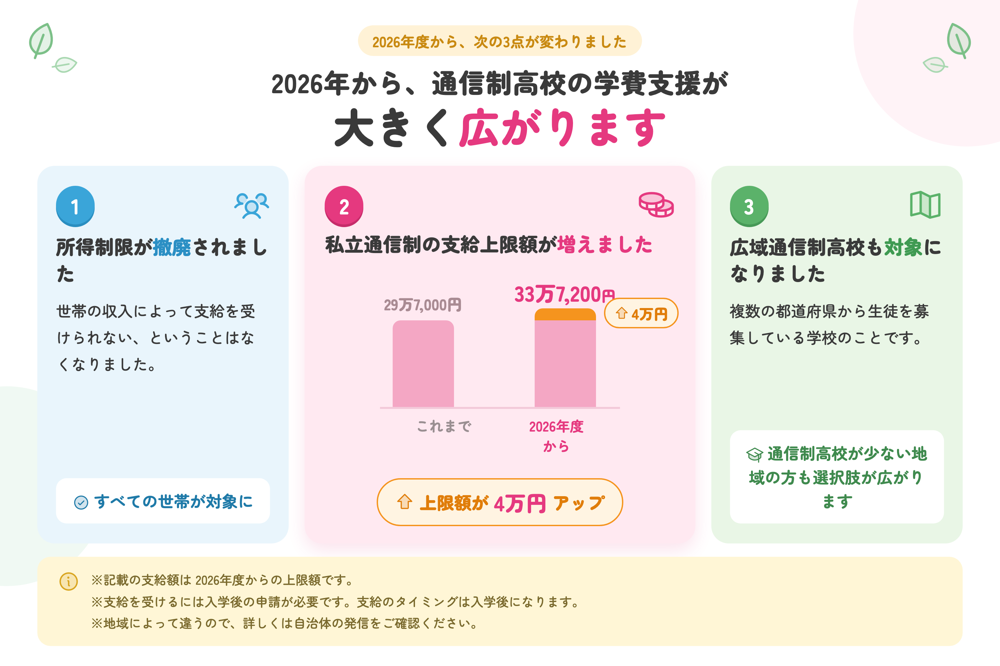
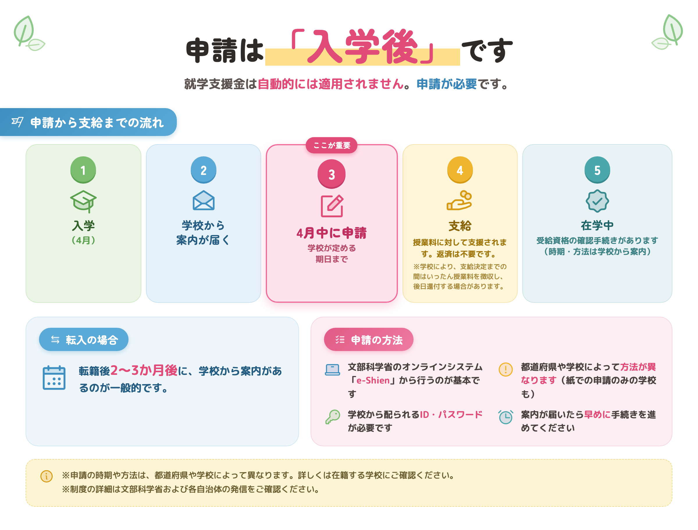
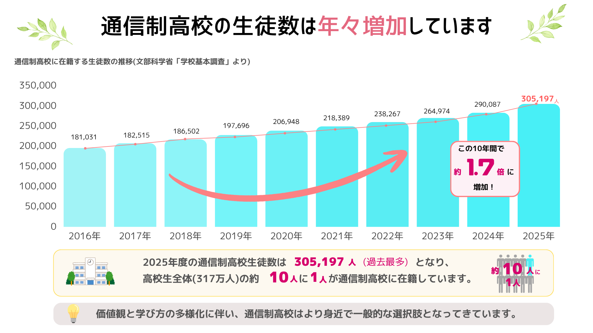
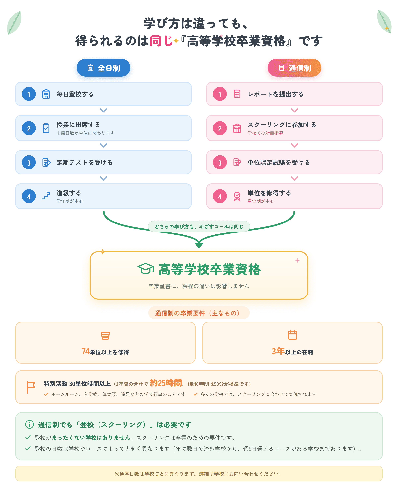
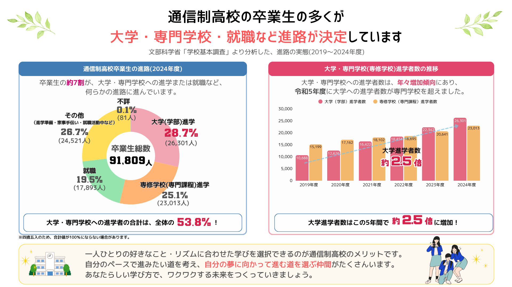
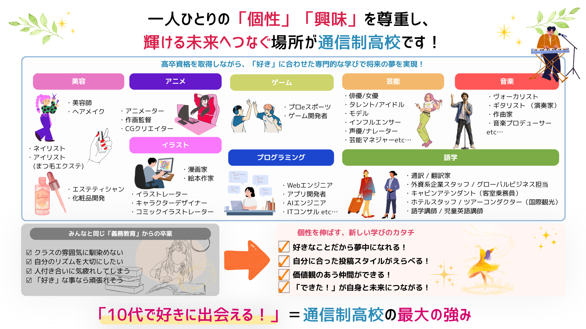

画面をタップで閉じる／指を広げてさらに拡大できます
PR
夏が過ぎ、進路を真剣に考える時期になりました。
お子さんが通信制高校を選択肢に入れている、あるいはご家庭で話題に上がっている。
そんなときにまず気になるのが、学費のことではないでしょうか。
この記事では、通信制高校の学費が実際にいくらかかるのか、授業料以外にどんな費用が発生するのか、そして2026年度から拡大した無償化制度で何が変わるのかを、順にまとめました。
まず結論からお伝えします。通信制高校の学費は、公立か私立かで大きく変わります。
| 公立 | 私立 | |
|---|---|---|
| 年間にかかる目安 | 2〜6万円 | 30〜65万円 |
| 入学金（初年度のみ） | 約500円 | 数万円〜20万円程度 |
※「年間にかかる目安」は、授業料のほか教科書代・施設費などを含んだ金額です。何が含まれるかは学校によって異なります。入学金は初年度のみかかります。

通信制高校の多くは単位制です。全日制のように「年額いくら」と決まっているのではなく、
履修する単位数に応じて授業料が決まる仕組みになっています。公立の場合、授業料は1単位あたり300〜1,000円程度が目安です。
そのため、選ぶコースや通学の頻度によって金額が変わります。通学日数の多いコースや、美容・ITなどの専門コースを選ぶと、費用は上がる傾向にあります。
学費を考えるときに見落とされやすいのが、授業料以外の費用です。
なお「スクーリング」とは、学校に登校して受ける授業のことです。通信制高校ではレポートの提出とあわせて卒業に必要な要件になっており、登校の日数は学校やコースによって大きく異なります。
これらは学校やコースによって大きく変わります。資料を取り寄せる段階で、授業料以外に何がかかるかを確認しておくと安心です。
※学費は学校ごと・コースごとに異なります。詳細は学校にお問い合わせください。
ニュースでも取り上げられている高校の授業料無償化ですが、2026年度から内容が変わりました。通信制高校も対象です。
主な変更点は3つです。
所得制限が撤廃されたことで、世帯の収入によって支給を受けられないということはなくなりました。通信制を選ぶご家庭にとって、経済的なハードルは以前より下がっていると言えます。
※地域によって違うので詳しくは自治体の発信をご確認ください。また、就学支援金の支給のタイミングは入学後になります。

就学支援金は、自動的に適用されるものではありません。申請が必要です。
そして申請するのは入学後です。入学前に手続きをするものではありません。
申請は文部科学省のオンラインシステム（e-Shien）から行うのが基本ですが、都道府県や学校によって方法が異なります（紙での申請のみを受け付けている学校もあります）。学校から配られる「ログインID通知書」（IDとパスワードが記載されています）が必要になるので、案内が届いたら早めに手続きを進めてください。
どこまでが支援の対象になるかは、学校やコースによって変わります。入学を検討している学校に、事前に確認しておくと安心です。

私たち親の世代には、通信制高校は身近な選択肢ではありませんでした。
そのため「本当に大丈夫だろうか」と心配になる方は少なくありません。
ただ、状況は大きく変わっています。
通信制高校に通う生徒は2025年度に30万人を超え、過去最高を更新しました。今では高校生の約10人に1人が通信制課程の生徒です。少子化で高校生全体の数が減り続けているにもかかわらず、この10年で約1.7倍に増えています。
※文部科学省「学校基本調査」による。

実際に通っている生徒の声も出ています。株式会社プレマシードの調査では、通信制高校の生徒の84%以上が「入ってよかった」と回答しています。また同社の別の調査では、10代の6割が通信制高校に良いイメージを持っているという結果も出ています。
※株式会社プレマシードの調査による。
| 全日制 | 通信制 | |
|---|---|---|
| 学習の進め方 | 毎日登校し、クラスで授業を受ける | レポート提出・スクーリング・試験で単位を取る |
| 課程 | 学年制が中心 | 単位制が中心 |
| 通学 | 基本的に毎日 | 学校・コースにより異なる |
| 得られる資格 | 高等学校卒業資格 | 高等学校卒業資格（同じ） |
大きな違いは、単位の取り方です。
全日制は毎日通うことが前提で、出席日数が単位に関わります。一方の通信制は、レポートの提出とスクーリング（面接指導）、そして試験によって単位を積み上げていきます。
自分のペースで学習を進めやすいのが特徴です。
なお、通信制でも登校はあります。スクーリングは卒業に必要な要件で、登校がまったくない学校はありません。ただし年に数日程度で済む学校から、週5日通えるコースがある学校まで、幅は非常に大きくなっています。
※通学日数は学校ごとに異なります。詳細は学校にお問い合わせください。
そして卒業して得られるのは、全日制と同じ「高等学校卒業資格」です。卒業証書に課程の違いは影響しません。

「通信制に行くと、進学や就職で不利になるのではないか」
保護者の方から、最もよく聞かれる心配です。実際の数字を見てみます。

大学に進学した人が28.7%、専修学校（専門課程）に進学した人が25.1%。合わせて53.8%で、卒業生の半数以上が進学しています。就職した人を加えると、7割を超えます。
変化が大きいのは大学進学です。大学に進学した人数は、この5年で約2.5倍になりました。
令和5年度には、大学への進学者数が専門学校への進学者数を初めて上回っています。
一方で、進学も就職もしていない「その他」が26.7%あります。ここには進学準備や家事手伝い、就職活動を続けている人などが含まれますが、内訳までは分かりません。卒業の時点で次が決まっていない人が、4人に1人ほどいるということです。
ただし、これは全国の平均です。進路の実績は、学校によってかなり違います。大学進学に力を入れている学校もあれば、専門分野の技能を伸ばすことを重視している学校もあります。
お子さんがどんな進路を考えているかによって、選ぶべき学校は変わります。ここも、資料を取り寄せて比べておきたいところです。
※文部科学省「学校基本調査」より。2024年度卒業者。四捨五入のため合計が100%にならない場合があります。
通信制高校を選ぶ理由は、「毎日通うのが難しいから」だけではありません。
自分のペースで学習を進められるということは、空いた時間を好きなことに使えるということでもあります。実際に、専門分野を学べるコースを用意している学校が増えています。

お子さんが夢中になっているものは、この中にありませんか。
好きなことがはっきりしている子ほど、それを高校で学べると知ったときの反応は違います。
「高校に行きたくない」が「この高校なら行ってみたい」に変わることもあります。
※学べる分野やコースは学校によって異なります。詳細は学校にお問い合わせください。
之を知る者は之を好む者に如かず。
之を好む者は之を楽しむ者に如かず。『論語』雍也第六
知っているだけの人は、それを好きな人にはかなわない。
好きな人も、それを楽しんでいる人にはかなわない。
2500年前の孔子の言葉です。
子どもが何かに夢中になっているとき、私たち大人が教えられることはもう多くありません。
本人が楽しんで進んでいくほうが、ずっと速いからです。
結局のところ、私たち親にできるのは、子どもに合った環境を用意してあげることだけなのだと思います。
楽しんで学んでいくなかで、社会に価値を提供する術が身についていく。そしてその価値によって、自分の生活を立てられるようになる。
もしそんなふうになってくれたら、親としてこれ以上に喜ばしいことはないと、私は思います。
通信制高校は、全国に300校以上あります。
学費も、通学の頻度も、学べる内容も、学校によってまったく違います。
そのなかから、お子さんに合う学校を一つひとつ調べていくのは、正直かなり大変です。
やりたいこと・通学の頻度・お住まいの地域から、条件に合う通信制高校を探して、
まとめて資料請求できるサービスがあります。
費用はかかりません。まずは何校か資料を取り寄せて、学費や通学スタイルを比べてみることから始めてみてください。
無料で資料をまとめて取り寄せる※資料請求後、学校から連絡が入る場合があります。気になる点は、その際に直接ご確認いただけます。
運営元について
ご紹介しているサービス「ズバット通信制高校比較」は、株式会社ウェブクルーが運営しています。
これまでに15万人以上が利用しています（※2023年4月現在）。
同社は、お客様から取得する個人情報を含むすべての情報について、情報セキュリティの国際規格「ISO27001（ISMS）」の認証を取得し、それに基づく管理を行っています。
お子様の進路にかかわる情報をお預けいただくことになるため、気になる方も多い点だと思い、記載させていただきました。
資料請求に費用はかかりません。
画面をタップで閉じる／指を広げてさらに拡大できます